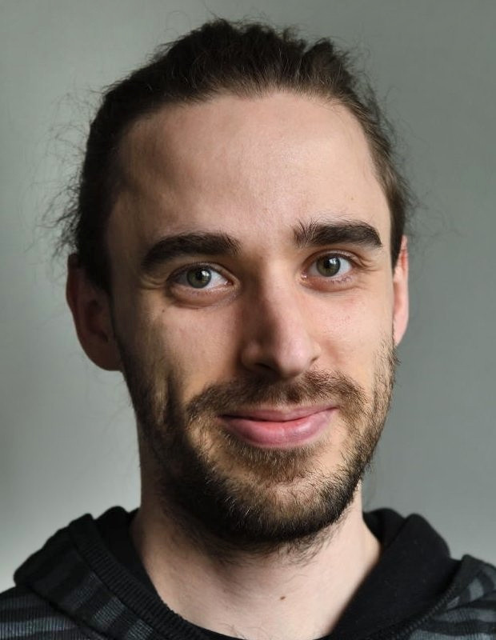

About Me
I’m an experimental physicist specializing in ultracold atoms, quantum control, and quantum hardware. My work has covered the design, operation, and optimization of AMO platforms. As of now, I have worked with Bose–Einstein condensates, bosons in optical lattices as well as ultracold fermionic gases.
I completed my PhD in the Magnetic Quantum Gases team at the Laboratoire de Physique des Lasers in Villetaneuse, France, where I studied spin dynamics in Chromium BECs and 3D optical lattices under the supervision of Bruno Laburthe-Tolra and Laurent Vernac.
After that, I joined the Quantum Engineering group at LCAR in Toulouse, France, working on optimal control of Rubidium condensates in 1D lattices. I then moved to the Centre for Quantum Technologies in Singapore, where I contributed to the transfer of optical skyrmions to ultracold Strontium ensembles and the development of qutrit gates using optimal control.
Across these projects, I’ve developed an interest in the application of quantum mechanics and AMO physics to real-world problems, particularly through quantum simulation and quantum computing. I’m motivated by the idea that well-engineered quantum systems can have a powerful positive impact!